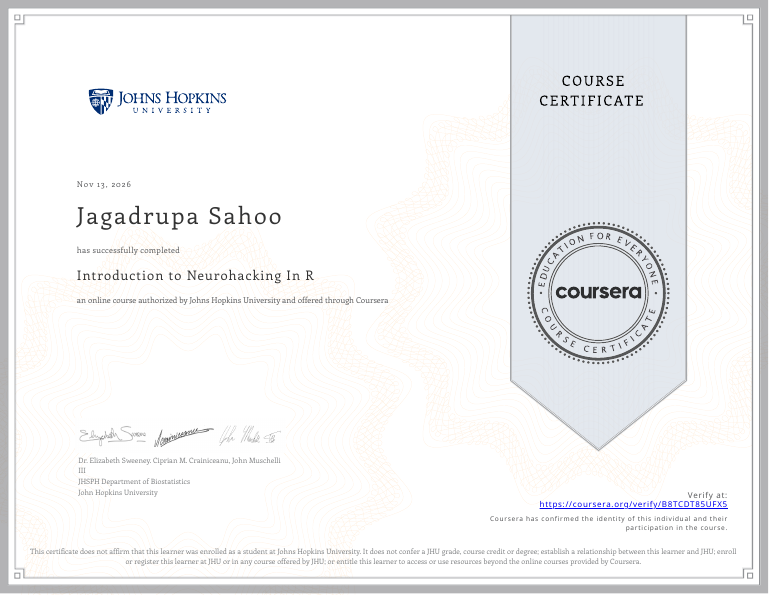
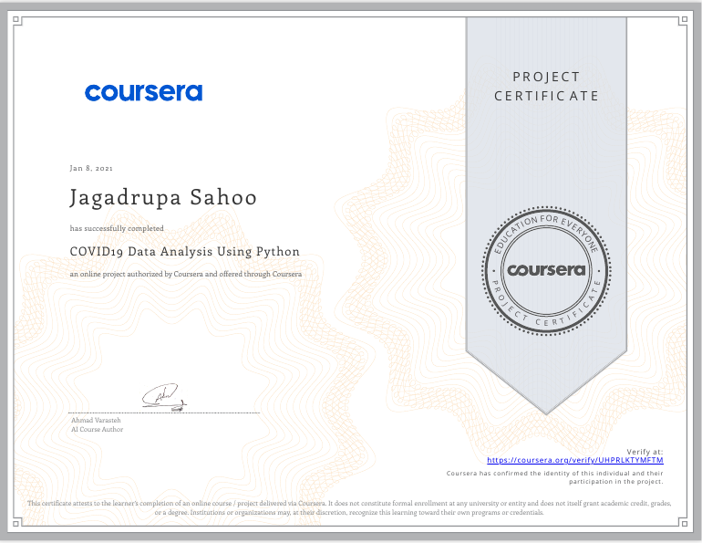

Bioinformatics · Neuroscience
Skills and certificates
I work in bioinformatics and study human Alzheimer's tissue with spatial transcriptomics. This is a summary of my skills, and the certifications that have helped me build them over the years. Expand any area to see how each skill was gained.
Summary map
This map traces how my research interests have developed over the years, from biotechnology and bioinformatics towards neuroscience.
Coursework, research projects and a review, 2020 to 2026
Projects and review (4)
Spatial transcriptomics of human Alzheimer's cortex
Independent project · 2026, public repository and technical reportMulti-omics integration of published Alzheimer's disease datasets
Independent project · 2026Quercetin in a zebrafish model of Alzheimer's disease
Bachelor's project, Amity University · BSc, 2018 to 2021GPCR-targeted therapeutic strategies in neurodegenerative disease
Author of the review · Ethical Edufabrica, 2020MSc at Manchester, research at TUM, and certified and audited coursework
MSc at Manchester, research at TUM, an independent project and certified coursework
Research projects (5)
Westernized diets exacerbate tumorigenesis by upregulating H₂S-producing bacteria
Co-first author · Manuscript in preparationHost-specific divergence in motility and sulfur metabolism across 2,000 Desulfovibrio genomes
First author · Manuscript in preparationAn expanded flagellin repertoire in a mouse-restricted Desulfovibrio associated with XIAP deficiency
Co-author · Manuscript in preparationGut microbiome of the small intestine and colon in mice, and a search for bacterial choline acetyltransferase
Analysis and report · Written report, 2026Methylation motifs of Veillonella parvula
Exploratory project · Not completedBSc (Hons) Biotechnology, Amity University, 2018 to 2021, and certified coursework
Toolkit
Spatial and single-cell transcriptomics: Xenium and Visium, clustering and annotation, differential expression, spatial statistics, ligand–receptor analysis
Metagenomics: shotgun profiling, factorial differential abundance, PERMANOVA
Statistical genetics: gene-burden tests, LD score regression, polygenic scores
Neuroscience: neural encoding and decoding models, neuron and network simulation, fMRI design and analysis
Filled used in my own projects Outlined from audited coursework so far. The courses and certificates behind these are listed below.
Certificates and courses
Select a card for the course details, the full certificate and the issuer's verification link. Audited courses are marked and carry no certificate.
Neuroscience
Fundamental neuroscience 1 certified · 3 audited
Understanding the Brain: The Neurobiology of Everyday LifeThe University of Chicago · 13 Jul 2020AnatomyNeurologyPhysiologySensory Systems Analysis
Functional neuroanatomy, perception, movement and homeostasis.
Modules
- The nervous system
- Neural communication and embodied emotion
- Neuroanatomy
- Perception and vision
- Hearing
- The vestibular sense and gaze
- Voluntary movements
- Motor modulation
- Homeostasis
- Abstract function
Skills listed by the course
Audited
no certificateFundamentals of Neuroscience, Part 1: The Electrical Properties of the NeuronHarvardX · edX · MCB80.1xNeurophysiologyElectrophysiologyBiophysicsPhysiology
Lessons
- Resting potential
- Passive membrane properties
- Action potentials
- Action potential propagation
- DIY labs
Skills
Audited
no certificateFundamentals of Neuroscience, Part 2: Neurons and NetworksHarvardX · edX · MCB80.2xSynaptic TransmissionNeural CircuitsNeuromodulationSynaptic Plasticity
Lessons
- The synapse
- Excitation and inhibition
- Small circuits
- Neuromodulation
- Potentiation and depression
Skills
Audited
no certificateFundamentals of Neuroscience, Part 3: The BrainHarvardX · edX · MCB80.3xNeuroanatomySensory Systems AnalysisMotor SystemsPhysiology
Lessons
- Vision
- Audition
- Touch, taste, smell and the remaining senses
- Movement and action
- Subcortical brain areas
- Brain anatomy
Skills
Computational neuroscience 1 certified · 1 audited
 Computational NeuroscienceUniversity of Washington · 4 Sep 2026Network ModelMathematical ModelingReinforcement LearningSupervised Learning
Computational NeuroscienceUniversity of Washington · 4 Sep 2026Network ModelMathematical ModelingReinforcement LearningSupervised Learning
How neurons encode and decode information, and how networks compute and learn.
Modules
- Introduction and basic neurobiology
- Neural encoding models
- Neural decoding
- Information theory and neural coding
- Computing in carbon
- Computing with networks
- Plasticity in the brain and learning
- Learning from supervision and rewards
Skills listed by the course
Audited
no certificateComputational Neuroscience: Neuronal Dynamics of CognitionEPFLx · edX · BIO465.2xComputational NeuroscienceNetwork ModelMathematical ModelingDynamical Systems
Weeks
- Associative memory and the Hopfield model
- Attractor networks and spiking neurons
- Neuronal populations and mean-field theory
- Perception and cortical field models
- Decision making and competitive dynamics
- Synaptic plasticity and learning
Skills
Neuroimaging 5 certified

Introduction to Neurohacking in RJohns Hopkins University · 13 Nov 2026Image AnalysisMedical ImagingR ProgrammingData Preprocessing
Reading, visualising and processing structural brain images in R.
Modules
- Introduction
- Neuroimaging: formats and visualization
- Image processing
- Extended image processing
Skills listed by the course
 Principles of fMRI 2Johns Hopkins University · 13 Nov 2026Magnetic Resonance ImagingStatistical ModelingStatistical AnalysisData Analysis
Principles of fMRI 2Johns Hopkins University · 13 Nov 2026Magnetic Resonance ImagingStatistical ModelingStatistical AnalysisData Analysis
Advanced fMRI design and modelling, connectivity and multi-voxel pattern analysis.
Modules
- Psychological and behavioural inference, and advanced experimental design
- Advanced experimental design and advanced GLM modelling
- Brain connectivity
- Multi-voxel pattern analysis
Skills listed by the course
 Neuroscience and Neuroimaging Specialization (four courses)Johns Hopkins University · 13 Nov 2026Magnetic Resonance ImagingMedical ImagingImage AnalysisStatistical Analysis
Neuroscience and Neuroimaging Specialization (four courses)Johns Hopkins University · 13 Nov 2026Magnetic Resonance ImagingMedical ImagingImage AnalysisStatistical Analysis
All four Johns Hopkins courses: fundamental neuroscience, fMRI 1 and 2, and neurohacking in R.
Modules
- Fundamental Neuroscience for Neuroimaging
- Principles of fMRI 1
- Principles of fMRI 2
- Introduction to Neurohacking in R
Skills listed by the course
 Principles of fMRI 1Johns Hopkins University · 11 Nov 2026Magnetic Resonance ImagingStatistical AnalysisStatistical ModelingData Analysis
Principles of fMRI 1Johns Hopkins University · 11 Nov 2026Magnetic Resonance ImagingStatistical AnalysisStatistical ModelingData Analysis
How fMRI data are acquired, pre-processed and analysed with the General Linear Model.
Modules
- Introduction to fMRI, data acquisition and reconstruction
- The fMRI signal, experimental design and pre-processing
- The General Linear Model
- Group-level analysis and the multiple comparison problem
Skills listed by the course
 Fundamental Neuroscience for NeuroimagingJohns Hopkins University · 13 Jul 2020Magnetic Resonance ImagingMedical ImagingAnatomyResearch Design
Fundamental Neuroscience for NeuroimagingJohns Hopkins University · 13 Jul 2020Magnetic Resonance ImagingMedical ImagingAnatomyResearch Design
Structural and functional neuroanatomy, imaging methods and experimental design.
Modules
- Structural neuroanatomy of the human brain
- Functional neuroanatomy of the human brain
- Principles and methods of neuroimaging
- Experimental design and special applications in neuroimaging
Skills listed by the course
Psychology 4 certified
 The Psychology of Emotions: An Introduction to Embodied CognitionUniversity of Cambridge · 13 Nov 2026PsychologyResearch MethodologiesResearchNon-Verbal Communication
The Psychology of Emotions: An Introduction to Embodied CognitionUniversity of Cambridge · 13 Nov 2026PsychologyResearch MethodologiesResearchNon-Verbal Communication
How emotions are felt, studied and recognised in other people.
Modules
- What is cognitive psychology?
- How we feel emotions
- How do we study emotions?
- How do we recognise others' emotional facial expressions?
- Is it always easy to understand others' emotions?
Skills listed by the course
 The Neuropsychology of Decision MakingUniversity of Cambridge · 12 Nov 2026NeurologyAnatomyPhysiologyPsychology
The Neuropsychology of Decision MakingUniversity of Cambridge · 12 Nov 2026NeurologyAnatomyPhysiologyPsychology
Prefrontal cortex, neurotransmitters and the networks behind decisions.
Modules
- Introduction to neuroanatomy and neurodevelopment
- The importance of the prefrontal cortex
- Neurotransmitters, neurophysiology and decision networks
- Decision making styles and the role of childhood experiences
- Decision making deficits
Skills listed by the course
 Introduction to Cognitive Psychology and NeuropsychologyUniversity of Cambridge · 11 Nov 2026PsychologyResearch MethodologiesLearning TheoryHuman Learning
Introduction to Cognitive Psychology and NeuropsychologyUniversity of Cambridge · 11 Nov 2026PsychologyResearch MethodologiesLearning TheoryHuman Learning
How cognition is studied, and how memory, language, attention and perception work.
Modules
- What is cognitive psychology? History and core debates
- How do we measure the mind? Research methods
- The psychology of human language
- Memory, perception and cross-modal interactions
- Attention, consciousness and free will
Skills listed by the course
 Introduction to PsychologyYale University · 19 Jul 2020PsychologyLearning TheoryHuman LearningHuman Development
Introduction to PsychologyYale University · 19 Jul 2020PsychologyLearning TheoryHuman LearningHuman Development
The scientific study of thought and behaviour, from development to mental illness.
Modules
- Foundations: neuroscience, Freud, Skinner
- Development and language
- Cognition: perception, attention, memory
- Self and others: emotion, social psychology
- Variation: personality, intelligence, mental illness, therapy
- The good life: happiness
Skills listed by the course
Deep learning and machine learning
Machine learning 1 certified
Verified
on edXData Science: Building Machine Learning ModelsHarvardX · edX · 9 Jun 2026Machine LearningCross-ValidationRegularizationClassification Algorithms
Cross-validation, regularisation, common algorithms and a recommendation system, in R.
Modules
- The basics of machine learning
- Cross-validation to avoid overtraining
- Several popular machine learning algorithms
- Building a recommendation system
- Regularisation
Skills listed by the course
Keras and TensorFlow 2 audited
Audited
no certificateDeep Learning Fundamentals with KerasIBM · edXDeep LearningKerasArtificial Neural NetworksBackpropagation
Modules
- Introduction to deep learning and neural networks: neurons and neural networks, artificial neural networks, forward propagation
- Basics of deep learning: gradient descent, backpropagation, vanishing gradient, activation functions
- Keras and deep learning libraries: regression models and classification models with Keras
- Deep learning models: shallow versus deep networks, convolutional networks, recurrent networks, transformers, autoencoders
Skills
Audited
no certificateDeep Learning with TensorFlow and KerasIBM · edXTensorFlowKerasConvolutional Neural NetworksTransformer Models
Modules
- Advanced Keras functionalities: functional and subclassing APIs, custom layers, TensorFlow 2.x
- Advanced CNNs in Keras: data augmentation, transfer learning, pre-trained models, transpose convolution
- Transformers in Keras: sequential data and time-series prediction
- Unsupervised learning and generative models: autoencoders, diffusion models, generative adversarial networks
- Advanced Keras techniques: custom training loops, hyperparameter tuning, model optimisation
- Reinforcement learning: Q-learning and deep Q-networks
- Final project
Skills
PyTorch 3 audited
Audited
no certificatePyTorch Basics for Machine LearningIBM · edXPyTorchMachine LearningTensorsGradient Descent
Modules
- Tensors: 1D and 2D tensors, differentiation in PyTorch, datasets
- Linear regression: prediction, training, loss, gradient descent, cost
- Linear regression the PyTorch way: stochastic and mini-batch gradient descent, optimisation, training, validation and test splits
- Multiple input and output linear regression: prediction and training
- Logistic regression for classification: linear classifiers, Bernoulli distribution and maximum likelihood, cross-entropy loss
- Practice project: a neural network for breast cancer classification
Skills
Audited
no certificateDeep Learning with Python and PyTorchIBM · edXPyTorchDeep LearningConvolutional Neural NetworksArtificial Neural Networks
Modules
- Logistic regression and cross-entropy loss
- Softmax regression: multi-class classification
- Shallow neural networks: hidden neurons, multi-dimensional input, multi-class networks, backpropagation, activation functions
- Deep networks: dropout, weight initialisation, gradient descent with momentum, batch normalisation
- Convolutional neural networks: convolution, max pooling, multiple channels, a CNN for MNIST, torchvision models, GPUs
- Final project
Skills
Audited
no certificateApplied Deep Learning Capstone ProjectIBM · edXDeep LearningPyTorchKerasImage Classification
Modules
- Data handling: memory-based versus generator-based loading, augmentation in Keras and PyTorch
- CNN model development: building a CNN classifier
- Integrating a CNN with a vision transformer
- Final project submission
Skills
Bioinformatics
Genomic data science 7 certified
 Gut Check: Exploring Your MicrobiomeUniversity of Colorado Boulder and University of California San Diego · 3 Jan 2024MicrobiologyImmunologyNutrition and DietData Analysis
Gut Check: Exploring Your MicrobiomeUniversity of Colorado Boulder and University of California San Diego · 3 Jan 2024MicrobiologyImmunologyNutrition and DietData Analysis
The human gut microbiome, how it is studied and what it means for health.
Modules
- Introduction to microbes and the human microbiome
- Studying the microbiome
- Making sense out of microbial data
- The human gut microbiome and your health
- Gut microbe-host interactions: beyond nutrition
- What's in the American Gut
Skills listed by the course
 Algorithms for DNA SequencingJohns Hopkins University · 2 Mar 2023BioinformaticsAlgorithmsData StructuresPython Programming
Algorithms for DNA SequencingJohns Hopkins University · 2 Mar 2023BioinformaticsAlgorithmsData StructuresPython Programming
String matching, indexing and assembly algorithms for sequencing reads, in Python.
Modules
- DNA sequencing, strings and matching
- Preprocessing, indexing and approximate matching
- Edit distance, assembly, overlaps
- Algorithms for assembly
Skills listed by the course
 Big Data, Genes, and MedicineThe State University of New York · 23 Feb 2023BioinformaticsPredictive ModelingClassification AlgorithmsR Programming
Big Data, Genes, and MedicineThe State University of New York · 23 Feb 2023BioinformaticsPredictive ModelingClassification AlgorithmsR Programming
Finding differentially expressed genes and predicting disease from expression data, in R.
Modules
- Genes and data
- Preparing datasets for analysis
- Finding differentially expressed genes
- Predicting diseases from genes
- Determining gene alterations
- Clustering and pathway analysis
Skills listed by the course
 Python for Genomic Data ScienceJohns Hopkins University · 23 Feb 2023BioinformaticsPython ProgrammingData StructuresComputer Programming
Python for Genomic Data ScienceJohns Hopkins University · 23 Feb 2023BioinformaticsPython ProgrammingData StructuresComputer Programming
Python programming applied to sequence data.
Modules
- Overview of Python and first steps
- Data structures, ifs and loops
- Functions, modules and packages
- Reading and writing data, and Biopython
Skills listed by the course
 Genomic Data Science with GalaxyJohns Hopkins University · 4 Jul 2021BioinformaticsData AnalysisBig DataData Quality
Genomic Data Science with GalaxyJohns Hopkins University · 4 Jul 2021BioinformaticsData AnalysisBig DataData Quality
Reproducible genomic analysis on the Galaxy platform.
Skills listed by the course
 Introduction to Genomic TechnologiesJohns Hopkins University · 13 Jun 2021BioinformaticsMolecular BiologyBiologyStatistical Analysis
Introduction to Genomic TechnologiesJohns Hopkins University · 13 Jun 2021BioinformaticsMolecular BiologyBiologyStatistical Analysis
The measurement, computing and data science behind modern genomics.
Modules
- Overview
- Measurement technology
- Computing technology
- Data science technology
Skills listed by the course

COVID19 Data Analysis Using Python (guided project)Coursera Project Network · 8 Jan 2021Python ProgrammingData AnalysisData VisualizationStatistical Analysis
Biotechnology
Applied biotechnology 4 certified
 Personalised Medicine from a Nordic PerspectiveUniversity of Copenhagen and University of Iceland · 21 Feb 2023Precision MedicineMedical Science and ResearchClinical ResearchHealthcare Ethics
Personalised Medicine from a Nordic PerspectiveUniversity of Copenhagen and University of Iceland · 21 Feb 2023Precision MedicineMedical Science and ResearchClinical ResearchHealthcare Ethics
Biomarkers, genetics and omics in personalised medicine, with its evidence, ethics and communication.
Modules
- Introduction to personalised medicine
- Health information used in personalised medicine
- Biomarkers, genetics and omics
- Evidence and documentation for clinical efficacy
- Communication in personalised medicine
- Ethical, legal and social aspects
Skills listed by the course
 Industrial BiotechnologyUniversity of Manchester · 22 Jun 2020BiotechnologyPharmaceuticalsProcess EngineeringSustainable Technologies
Industrial BiotechnologyUniversity of Manchester · 22 Jun 2020BiotechnologyPharmaceuticalsProcess EngineeringSustainable Technologies
Enzyme engineering, synthetic biology and bioprocessing, with industrial case studies.
Modules
- Enzymes, enzyme discovery and engineering
- Methods in systems and synthetic biology
- Biochemical and bioprocess engineering
- Pharmaceuticals and fine chemicals
- Case studies: bioenergy and biomaterials
- Case studies: glycoscience and biotherapeutics
Skills listed by the course
 Drug DiscoveryUniversity of California San Diego · 7 Jun 2020Drug DevelopmentPharmacologyClinical TrialsPharmaceuticals
Drug DiscoveryUniversity of California San Diego · 7 Jun 2020Drug DevelopmentPharmacologyClinical TrialsPharmaceuticals
How a drug moves from target and compound selection to preclinical studies and delivery.
Modules
- Pharmaceutical and biotechnology industry landscape
- Drug discovery: proteomics, genomics
- Compound selection and preclinical studies
- Fragment-based drug discovery for protein kinases
- Key concepts in drug delivery
Skills listed by the course
 The Science of Stem CellsAmerican Museum of Natural History · 6 Jun 2020Cell BiologyBiologyPrecision MedicineMedical Science and Research
The Science of Stem CellsAmerican Museum of Natural History · 6 Jun 2020Cell BiologyBiologyPrecision MedicineMedical Science and Research
What stem cells are, and how they are used to study and treat disease.
Modules
- Introduction to stem cells
- Using stem cells to study disease
- Using stem cells to treat disease
- The bioethics of stem cell research and therapy
Skills listed by the course